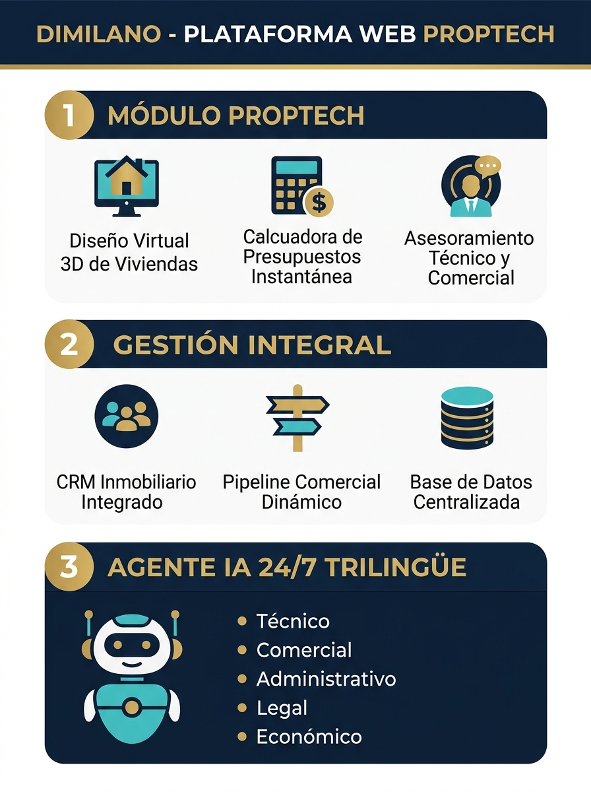

Cómo aumentar la productividad, reducir costes, mejorar la comodidad del equipo, elevar la satisfacción del cliente y construir una imagen corporativa premium.
En construcción e inmobiliaria, lo que decide una operación sigue siendo humano: profesionalidad, calidad, criterio y trato. Lo que está cambiando es la forma de captar, seleccionar y gestionar al cliente.
La idea para un nerd: la web es la interfaz; el agente es el runtime; el CRM es la base de datos; la persona es el criterio. Si el sistema hace lo repetitivo, el equipo hace lo que solo una persona puede hacer: generar confianza.
“High tech para lo repetitivo. High touch para lo que decide.”

Di Milano ya tiene marca, trayectoria, inmuebles y valorador. Lo que falta es la capa que atiende, cualifica, asesora, agenda y mide. La V1.0 ya está construida y desplegada; la V2.0 la conecta con el inventario, el calendario, el CRM/ERP y el cliente final.
| Fuga detectada | Impacto típico | Consecuencia |
|---|---|---|
| Leads fuera de horario sin respuesta inmediata | 20–35 % del total | Se enfrían o se van a la competencia |
| Leads sin seguimiento estructurado | 20–30 % | Se pierden en WhatsApp, email o libreta |
| Visitas mal cualificadas o no-shows | 20–30 % | Tiempo comercial y desplazamientos improductivos |
| Inventario y respuestas repetitivas manuales | 4–8 h/semana | Coste administrativo y equipo desmotivado |
| Experiencia digital de “catálogo pasivo” | — | La marca física se percibe mejor que la digital |
Cada función está pensada para una fuga concreta del recorrido comercial. No son “features” aisladas: forman un sistema que atiende, cualifica, valora, asesora, agenda y mide.
| # | Función | Qué resuelve | KPI de impacto |
|---|---|---|---|
| 01 | Agente IA 24/7 con memoria y cualificación | Conversa, recuerda el perfil y detecta rol, presupuesto, zona, habitaciones y plazo. Pide contacto cuando el lead está caliente. | Respuesta < 1 min · 20–35 % de leads fuera de horario capturados |
| 02 | Búsqueda conversacional + matching explicado | Interpreta lenguaje natural y devuelve 3 inmuebles con el motivo de cada match, no una lista de filtros. | −50 % abandono de búsqueda · +10–15 % solicitudes |
| 03 | Tasación exprés con rango, comparables y renta | Valor orientativo, €/m², renta estimada y rentabilidad por barrio; respuesta inmediata para el vendedor. | 5–10 min ahorrados/tasación · +20 % leads de vendedor |
| 04 | Estimador de reforma + plusvalía | Coste por m² y nivel de reforma, con valor final esperado; cualifica antes de la visita técnica. | 1–2 h/proyecto · +10–20 % leads de reforma |
| 05 | Asesor legal y económico + 7 PDFs | Compraventa, alquiler, reforma, garantías y fiscalidad; checklists, arras, presupuesto y hoja de encargo descargables. | −30–40 % consultas legales repetidas · 7 documentos |
| 06 | CRM con score, etapa y próxima acción | Cada conversación genera una ficha priorizada con rol, presupuesto, zonas, score y siguiente paso. | 20–30 % leads recuperados · 5–8 h/semana |
| 07 | Agenda de visitas + WhatsApp contextual | El cliente agenda desde el chat; el equipo recibe el contexto del inmueble y continúa por WhatsApp sin repetir nada. | −20–30 % no-shows · 3–5 min/visita |
| 08 | Multi-idioma ES / GL / EN + voz | Atención en tres idiomas, lectura de respuestas y micrófono; accesibilidad y clientes internacionales. | +10–20 % clientes internacionales · coste marginal casi nulo |
| 09 | Radar de mercado + Google Maps / SEO local | Precios y rentas por barrio, “cómo llegar”, mapa bajo demanda y datos estructurados para búsqueda local. | +15–25 % tráfico orgánico local · menos llamadas de ubicación |
| 10 | Analítica de leads, eventos y UTMs | Mide origen, score, demo, visitas y conversión para saber qué canal trae leads y qué campaña merece inversión. | 2–4 h/mes reporting · 10–20 % mejor asignación de marketing |
Lectura rápida de cómo cada función mejora productividad, costes, comodidad, cliente e imagen. Las cifras son rangos de trabajo; el piloto fija la línea base real.
| # | Productividad | Eficiencia de costes | Comodidad laboral | Satisfacción del cliente | Imagen premium |
|---|---|---|---|---|---|
| 01 | +6–10 h/semana | −20–30 % coste/lead | −preguntas repetidas | Respuesta < 1 min, 24/7 | Marca innovadora |
| 02 | −60–80 % filtrado | +10–15 % conversión | Menos idas y venidas | Encuentra lo que quiere | Experiencia inteligente |
| 03 | 5–10 min/tasación | +20 % leads vendedor | Sin comparables manuales | Rango y renta al instante | Experto local |
| 04 | 1–2 h/proyecto | +10–20 % leads reforma | Menos consultas repetidas | Claridad antes de obra | Constructora + inmobiliaria |
| 05 | −30–40 % consultas | Menos horas de asesoría | El equipo no repite leyes | Confianza y PDFs | Rigor y cumplimiento |
| 06 | 5–8 h/semana | 20–30 % leads recuperados | Prioridades claras | Seguimiento puntual | Gestión profesional |
| 07 | 3–5 min/visita | −20–30 % no-shows | Sin teléfono cruzado | Reserva en el chat | Agilidad y cercanía |
| 08 | Atiende sin más personal | Nuevo segmento sin coste marginal | Accesibilidad | Idioma nativo y voz | Marca internacional |
| 09 | Contenido listo | +15–25 % orgánico local | Menos investigación manual | Datos de zona y cómo llegar | Líder local |
| 10 | 2–4 h/mes | 10–20 % mejor inversión | Decisiones con datos | Mejor respuesta | Cultura data-driven |
La V2.0 conecta la capa comercial con la operación real: inventario, calendario, WhatsApp, obra, firma, financiación, CRM/ERP y dirección. Cada bloque se prioriza por retorno y se entrega en 2–6 semanas.
| # | Función | Qué añade | KPI de impacto | Plazo |
|---|---|---|---|---|
| 01 | Inventario vivo | Sincroniza agente y web con el inventario real (XML/CRM): disponibilidad, precio, fotos y estado sin copy/paste. | 4–8 h/semana · 0 fichas desactualizadas · +10–15 % conversión | 2–3 sem |
| 02 | Galería inmersiva | Fotos profesionales, planos, tour 360 y vídeo; el agente envía la ficha adecuada en cada conversación. | +15–25 % engagement · menos envíos manuales | 2–3 sem |
| 03 | Mapa interactivo + SEO por zona | Buscador con mapa, fichas schema.org y páginas de barrio escalables con plantillas. | +20–35 % tráfico orgánico · menor coste de adquisición | 3–4 sem |
| 04 | WhatsApp Cloud API + bandeja omnicanal | Plantillas de visita, recordatorios, seguimiento y handoff al equipo desde una sola bandeja. | −25–35 % no-shows · 5–8 h/semana · reactivación | 3–4 sem |
| 05 | Agenda inteligente | Google Calendar/Cal.com: huecos reales, confirmación, recordatorios 24 h/2 h y reprogramación. | −30 % coordinación · 1–2 días más rápido por visita | 2–3 sem |
| 06 | Portal del cliente de obra | Avances, fotos, documentos, hitos, incidencias y mensajes por proyecto. | −30–40 % llamadas de estado · más satisfacción | 4–6 sem |
| 07 | Firma digital + expediente legal | Firma de presupuestos, arras y hojas de encargo; expediente con consentimientos, PDFs y trazabilidad. | −50 % papel · 1–3 días menos por cierre | 3–4 sem |
| 08 | Simulador hipotecario + precalificación | El comprador estima cuota, entrada y capacidad; el agente prioriza leads con financiación real. | +15–25 % compradores cualificados · menos visitas improductivas | 3–4 sem |
| 09 | CRM/ERP + marketing automation | Sincronización bidireccional, email marketing, nurturing y reactivación automática. | −20–30 % administración · +10–15 % repetición/referidos | 4–6 sem |
| 10 | Business intelligence + atribución | Panel de embudo, origen, ROI por canal, tiempos de respuesta y exportaciones para dirección. | +10–20 % eficiencia de marketing · decisiones con datos | 2–3 sem |
La V2.0 no añade ruido: elimina trabajo manual y conecta los puntos que hoy viven en herramientas separadas.
| # | Productividad | Eficiencia de costes | Comodidad laboral | Satisfacción del cliente | Imagen premium |
|---|---|---|---|---|---|
| 01 | 4–8 h/semana menos | Menos leads perdidos | Cero copy/paste | Precios siempre reales | Fiabilidad y control |
| 02 | Contenido reutilizable | Más engagement | Menos envíos manuales | Decide mejor antes de visitar | Presentación premium |
| 03 | SEO escalable | Menor coste por lead | Menos trabajo repetitivo | Encuentra por zona | Autoridad local |
| 04 | 5–8 h/semana | Reactivación y menos no-shows | Una bandeja, no el móvil personal | Canal familiar y rápido | Atención 24/7 |
| 05 | −30 % coordinación | Más visitas por semana | Sin ping-pong de agendas | Autoservicio y recordatorios | Experiencia sin fricción |
| 06 | −30–40 % llamadas | Menos retrasos e incidencias | Menos interrupciones | Transparencia de la obra | Constructora premium |
| 07 | −50 % papel | Menos mensajería y errores | Sin perseguir firmas | Firma desde cualquier lugar | Modernidad y cumplimiento |
| 08 | Cualificación automática | Menos visitas improductivas | Respuestas estándar | Claridad financiera | Asesoramiento transparente |
| 09 | −20–30 % administración | +10–15 % repetición/referidos | Una sola fuente de verdad | Comunicación consistente | Nivel enterprise |
| 10 | Reporting automático | +10–20 % eficiencia | Menos Excel y suposiciones | Mejor segmentación | Cultura de datos |
| Prioridad | Función | Por qué ahora |
|---|---|---|
| 1 | Inventario vivo | Es la base de la credibilidad: disponibilidad, precio y fotos siempre reales. |
| 2 | WhatsApp Cloud + agenda | Ataca directamente no-shows y tiempo administrativo. |
| 3 | Galería + SEO por zona | Aumenta engagement y tráfico orgánico con contenido reutilizable. |
| 4 | Portal de obra + firma digital | Diferenciación real en constructora; menos llamadas y cierres más rápidos. |
| 5 | CRM/ERP + BI | Convierte la operación en un sistema medible y escalable. |
No pedimos que creáis una proyección. Proponemos medir tres fuentes de valor con vuestra línea base y compararlas con el coste de implantación.
| Fuente de valor | Supuesto conservador | Mensual |
|---|---|---|
| Horas administrativas liberadas | 8 h/semana × 25 €/h | 800 € |
| Operaciones incrementales | 1–2/mes × margen M | M–2M |
| Mejor marketing | 150–300 €/mes | 150–300 € |
| Total con M = 2.500 € | 3.450–6.100 €/mes |
Fórmula: horas liberadas × coste/hora + operaciones extra × margen bruto + ahorro de marketing.
No incluye el ahorro potencial de evitar una contratación junior (18–24 k€/año) ni el valor de marca. Tampoco incluye la reducción de no-shows, que puede añadir varias visitas al mes.
El piloto demuestra valor con la operación real de Di Milano. Al final hay un informe con métricas y una decisión clara sobre la V2.0.
| KPI | Qué responde |
|---|---|
| Tiempo de primera respuesta | ¿Atendemos antes de que el lead se enfríe? |
| Leads cualificados / mes | ¿Más volumen o mejor calidad? |
| Tasa de visita y no-show | ¿La agenda se llena y se cumple? |
| Horas administrativas | ¿Cuánto tiempo recupera el equipo? |
| Coste por lead y por canal | ¿Qué marketing merece inversión? |
| CSAT / NPS | ¿El cliente percibe la mejora? |
Salimos con tres KPIs, un responsable y una fecha de arranque.
Demo: https://dimilano-vigo.vercel.app · Tel: 986 90 90 10
Email: info@dimilano.es · inmobiliaria@dimilano.es